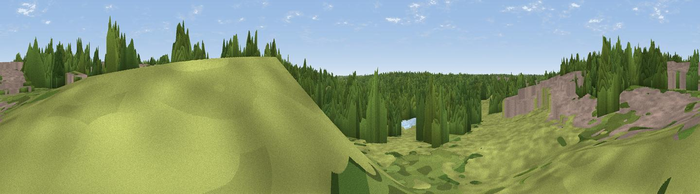

The Prospect
#44875 in England · top 71% of its area beats it · near ColneyThe view, rendered

A 360° render of this exact spot computed from the terrain model, tree cover and land cover — summer colours, afternoon light, calibrated against photographs of famous viewpoints. Real trees, hedges and buildings will differ in detail.
The panorama
Grey silhouette: terrain skyline in each direction (720 bearings, Earth curvature and refraction included). Dashed green: skyline with trees (+15 m) and buildings (+8 m) as obstacles. Blue strip: how far the ground is visible on each bearing.
Where the view opens
Wedge length = distance to the farthest visible ground on that bearing (vegetation-aware). Rings at 10, 25 and 50 km.
What fills the view
48% woodland · 31% grassland · 16% built-up · 3% water · 2% cropland
Angular shares of the visible panorama (visual magnitude), not map area. Landscape diversity 0.52 (0–1 Shannon).
Key numbers
More beautiful places nearby
The staircase of upgrades: each row has a higher view potential than everything closer. Driving times are estimates from straight-line distance, calibrated against real road routing — check an actual route before setting out.
| Place | Direction | Drive | Score |
|---|---|---|---|
| Chapel Hill | SE · 4 km | ~9 min | 27.9 |
| Viewpoint near Norwich | ENE · 5 km | ~11 min | 32.5 |
| Strumpshaw Hill | E · 15 km | ~28 min | 34.5 |
| Viewpoint near Paston | NNE · 31 km | ~48 min | 56.1 |
| Viewpoint near Mundesley | NNE · 31 km | ~48 min | 58.9 |
| Viewpoint near Trimingham | NNE · 32 km | ~50 min | 62.4 |
| Viewpoint near Sidestrand | NNE · 33 km | ~51 min | 65.3 |
| Viewpoint near Overstrand | N · 34 km | ~52 min | 67.5 |
52.62078, 1.24579 · source: osm viewpoint · position refined by local search. Computed location — check access rights before visiting.